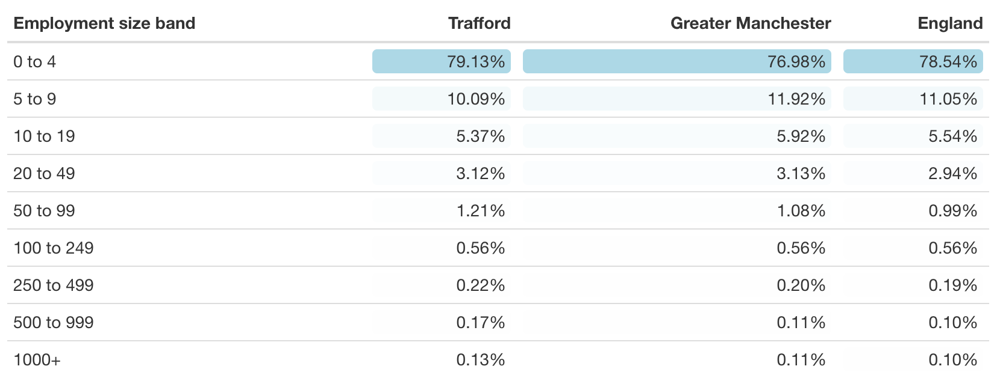

Businesses
The majority of businesses in Trafford employ 4 or fewer people (9,135, 79.1%) which is a similar proportion to Greater Manchester and England. There are 15 businesses in Trafford that employ 1,000 or more people (0.1%).
Number of businesses by size, 2019
Select the visualisation to open an HTML version in a new window.